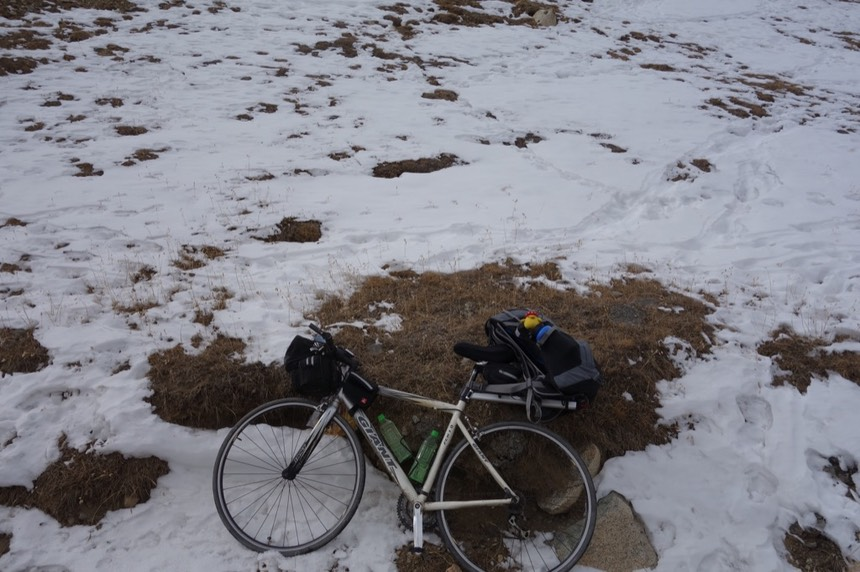
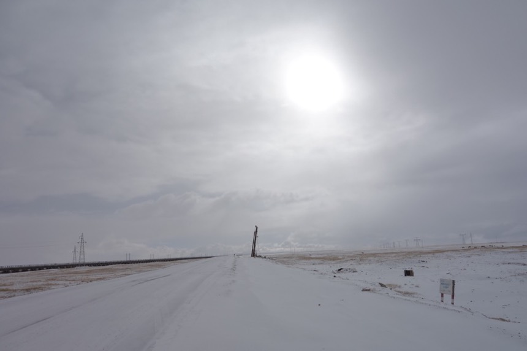
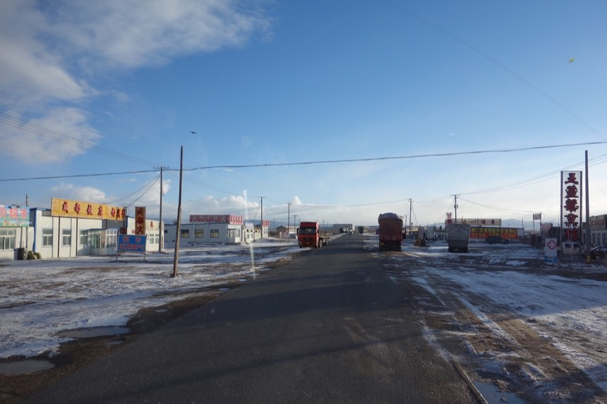
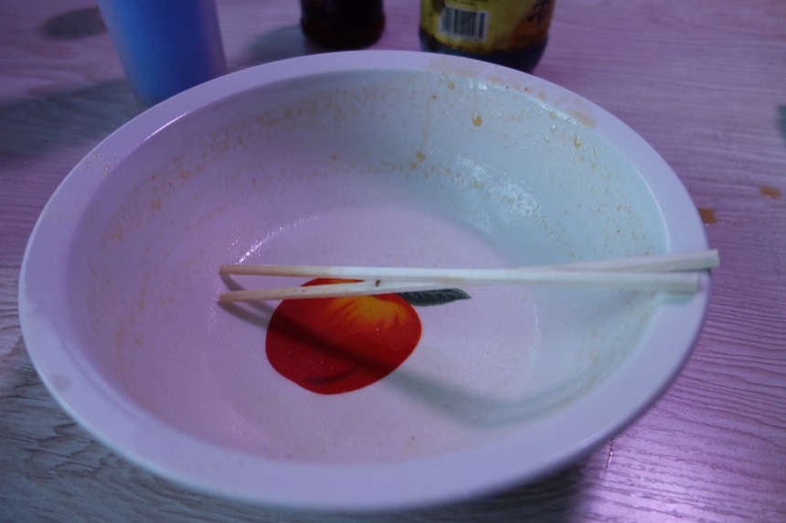

10/29 Day 9 兄弟倆卡車
一早起床發現通往內院廁所，那道重要的門被鎖住了！
衛生紙跟手電筒都準備好了，現在大小號都箭在弦上～怎麼辦？
而且整間餐廳間旅館，醒著的人只有我一個，還好大門沒鎖，一走出去就被滿天星斗給震懾住。
天色微亮，氣溫好低，大號縮了回去，小號還是很急。
找不到通往後院廁所的路，只好找一個牆邊尿尿。
回到房裡 看到室內溫度是4度，但我卻感覺房間好溫暖。（4度就好溫暖，我還能要求什麼？）
真不知道外面是零下多少？反正等下就要騎出去了，不急著揭開這謎底。
刷牙洗臉時遇到剛起床的老闆在升暖爐的火
昨天只是水壓小，今天連水都沒了。是水管凍住了嗎？改用水壺的水漱洗
老闆把往庭院的門打開之後，成功發現戶外用木頭搭建的廁所。
在被凍僵之前完成在露天廁所大便的任務，即使冰凍狀態，大便還是會臭。
由於天氣實在太冷，襪子一共穿了三雙，兩雙襪子，一雙腳踝襪。
新的跟舊的襪子一比，馬上就顯得很髒，也不過穿了一星期而已，而且我多少還有洗過呢。
八點，天全亮，問了一下老闆能不能吃早飯，答案是可以，但幾時會供早餐呢？
戶外有隻狗，被關在外面好可憐，牠一定很冷。
餐廳內開始傳出忙碌的聲音，循著聲音過去發現是廚房，美味的食物就是在這邊烹煮的。旅館的老闆自己也是廚師。
非常忙碌的廚房，而且食材好豐富，但我在這間店吃過的東西只有砂鍋，昨天吃羊肉口味，今天早上出發前吃雞肉口味。
首度開了暖暖包，出發前帶了十幾個暖暖包，終於有可以派上用場的機會了。
前/後輪都微軟，每天都要打氣再出發，找不到被刺破的地方，也懶得換內胎，反正早上出發前打一次氣可以撐一整天。
小小根的攜帶行打氣筒，是好東西～但打氣要打很多很多下。
出發前想吃點熱的東西再走，結果一拖就九點半了（我大概七點不到就起床了...）
吃了雞肉砂鍋（依然20元）外帶一個餅子（6元）
餅子剛拿到的時候還是微溫的，顧不得肚子裡裝了滿滿的砂鍋，就這麼接著趁熱吃起了餅子。

不知道這是用麵粉還是玉米粉還是青稞粉做的，味道很好，吃起來有一種蛋香味。
為了吃早餐，耽擱到九點半才出門，出發到崑崙山頂就是平緩的爬坡。大約要爬升700公尺。
今天大至都在零度以下騎車，偶爾會出現個0.2度這樣。
天空不像往常的蔚藍，一眼看去天空都是白茫茫一片，內心很不安。
全身上下最冷是腳掌，即使穿了三雙襪子+防水慢跑鞋，依舊很受凍，得不停的在鞋子內活動腳趾跟腳掌。
第二冷是手，已經戴上長指手套了還是冷，之前戴上手套還悶熱的會流手汗，現在則完全不會。
至於短指手套，我想短時間內已經沒有用處，這麼冷的天露出手指頭騎車實在太危險了，也怕反應不及來不及按煞車。
頗為陰霾的天氣，有點懷念藍天白雲，山上的氣候果真瞬息萬變。

白雪散佈的範圍不斷的在擴大，白色以外的顏色越來越少，到最後除了柏油路是黑的之外，其他一片雪白。
馬路邊很多小洞，不時看到很多的灰茸茸小動物跑來跑去（路上也很多過馬路失敗的..）以為是兔子，結果當地人說是老鼠。
看起來其實挺可愛，在雪地覆蓋大地的時候，雪上都是牠們小小的腳印。
以半小時爬升100公尺的速度緩慢爬升，雖然沒有明顯的高原反應，但是呼吸越來越喘，得不間斷地呼吸。

“不要忘記呼吸”我特地把這句話寫在筆記本內，有時候可能在拍照按快門的時候會暫停個一秒呼吸，
或是吃東西咀嚼的時候也會忘記呼吸（邊嚼東西邊呼吸需要練習），這時候整個人就會很喘，好像剛閉氣過一分鐘那樣，缺氧的感覺。
雖然餅子很好吃，但真的不要忘記呼吸～這很重要，以免一時氣喘不過來，身邊又沒有氧氣瓶就不好了。
越往高海拔走，天氣並沒有變得比較朗爽一點，依然是很白霧霧一片。
“會下雪嗎？”這個內心的問句，一方面很興奮的期待著，另一方面卻也有點擔心。
今天要騎到的目的地是索南達傑保護站，以一位動物保育者為名的紀念動物保護站，是小地方，路標上不會寫。
下午一點到崑崙山峰頂，海拔4768公尺，最後一段路大逆風，難騎的要命。
山頂也沒什麼特殊，就兩個雕像，很多旗子，被風吹的凍的要命，趕緊下山 >”<
這些飄揚的旗子，近看會發現印滿經文。
過了崑崙山，就是很有名的可可西里保護區了，這邊有藏羚羊，同時是中國最大的無人區。
理論上現在開始是一路下坡，但下坡路並不長。加上風勢驚人，騎車頗危險。
眼前的白茫茫終於開始發威了，下起了我期待以久的小雪。非常細的雪花，像鹽巴那樣。
一開始看到小小雪花從左往右飛舞，心裡好興奮，慢慢的整個人被包圍在雪花裡，很難形容的美景。
美麗的背後，有著下雪的困擾。
雪落在地下變成積水，路上像是下過雨一般，可是溫度確是零下五度左右，
輪胎濺起的水花飛散，然後～所有東西都結冰了。包括我的褲子
前後煞車片、前變速器，基本上整輛小喵號都被凍結了。
前叉跟後車因為結冰，導致前輪完全被卡住，後輪也是一樣的悲劇，輪胎連轉都轉不動，冰塊做的煞車。
我停在路邊看著無法變速，被卡在最高檔位的齒輪（下坡還好，等要上坡的時候該怎麼辦呢？）
身上的冰拍掉就好，單車上堅硬如石塊的冰該怎麼辦？
我拿出修車的工具，分別用十字起子跟一字起子奮力的把冰鑿掉。
輪胎能轉動了，但變速器依舊鎖死。
我如果告訴你，”直到抵達拉薩後，變速器的冰才溶解。“你會想在我臉上寫一個慘字嗎？
連水壺的水也開始結冰，其實我一路都在想，為什麼已經零下了，水壺的水還沒結冰了？
而現在它正開始結冰，直到我丟掉這兩個水壺的時候，它們都還是保持結凍的狀態，即使在室內過夜也是一樣。
帶著兩瓶不能喝的冰塊，只是徒增重量而已，建議騎低溫區域的旅者，水壺帶保溫型的比較好。區區寶特瓶可能不太合用。
騎了大約三公里 又聽到輪胎和車架上的結冰磨擦的刺耳聲。
停下來重新鑿冰，然後騎一小段～再鑿冰，反覆這樣進行，在我蹲在路邊鑿冰的時候，有過路的駕駛停車問我怎麼了？
“單車結凍了”我回答。
聽起來是個笑話，但卻是事實。也不知道對方有沒有聽懂，總之他們很好心地給了我幾根巧克力棒，感謝。
路過不凍泉，此處有食宿條件，但卻不是今天的目的地，我以為風雪是可以克服的，所以也不打算就在這住下。
若當時我選擇在這邊避一下風雪，明天再出發，不知道更好或是更壞，但這趟旅行就是不一樣的故事了。
路上看到很多藏羚羊、藏野馬、藏驢之類的，他們都小小隻，但是好可愛，而且離馬路邊好近～都不怕人嗎？
後來雪變小了點，以為惡夢結束了。
卻毫.無.預.警的下起了大雪，路面全被冰雪覆蓋，越往前騎，情況越糟。
煞車的時候，前後輪外加兩隻腳著地四點支撐，整輛車依然打滑的令人心驚膽跳。
剛才那些融化在路面上的水通通都結成了冰，整條馬路跟溜冰場一樣。
雪越下越大，視線很差，我不知道要騎在路邊還是路中間安全？
眼前有輛大貨車閃避我而過，接著停在馬路上，駕駛在車上跟我說了句什麼。
我為了停下來跟他應答，按下煞車時打滑的差點撲倒在地上摔個狗吃屎。
終於聽懂了他的問句，司機問我要騎去那？
腦袋一片空白，我只說的出索南、索南，連完整名字都說不出來，對方也不知道我要去的地方究竟是哪裡。
司機說“上車吧，別騎了，前面風雪更大，很危險的。”
我上車，那小喵號怎麼辦？
司機爬上載貨的車斗，叫我把單車傳上去給他。
也顧不得背包都還沒卸下來，想說只搭十幾公里到保護站就下車，不遠的，小喵號在帆布上支撐一下就到了。
上車後真的被眼前的風雪給嚇傻了，一開始還好，就是路面上的積雪越來越多。
再來別說騎單車，連開車都吃力。
千言萬語，不如看照片比較快，若我現在不是在卡車上，而是在馬路上，會是什麼樣的情況呢？
“老天爺呀～”我心裡也這麼想，這也未免太誇張！？
連我本來打算牽著車走在路肩，都已經一片雪白，視線真的很差，如果我在路上，很怕被車子給撞到（或是我自己滑倒）
而現在這樣的天候跟路況，就算有好心司機想停下車來載我，也略嫌危險。
到了保護站後，依然一片冰天雪地，是要在這住一晚，祈禱明天會放晴？
若明天、後天、大後天都還是這樣，那我要回頭騎回格爾木嗎？下一個願意讓我搭便車的好心人會在哪裡？
司機說，跟他們一起上去拉薩吧，“後天早上”就到了，一時我動搖了。
查詢了接下來幾天的天氣，青海、西藏，都是下雪天，

看著眼前突然出現了大太陽，耀眼奪目，我都已經幾乎要脫口而出“讓我在這下車吧。”
然後一轉眼又下起大風雪。
好個瞬息萬變，難以預測的天氣，不知道該不該跟老天賭一把？但若又被大雪給困住了，接下來還有好心的司機會載上我嗎？
決定就騎到這收工，這次有爬上4700公尺的高原，有在雪中騎過車，我沒有遺憾了...
爬上卡車，有點費力的把小喵號上的包包一個一個卸下（用束帶綁得緊緊）。
買了剪刀就是為了剪斷束帶，而剪刀在包包裡，包包的拉鍊卻被冰水給凍住根本拉不開，真是讓我欲哭無淚。
我的好搭擋小雞兄也變成白鬍子小雞了。
費了一番功夫，終於拆下自蘭州後就沒卸下的後背包，小喵號只能委屈你在這邊待著了。
想喝掉水壺的水，居然都結凍了，隨它去吧。
哥哥，24歲，已經結婚，兩個小孩，弟弟才18歲就跟著哥哥出來跑車，兩個人就這麼輪流交替著開，連夜間也不休息。
西藏人，老家-納木錯，靠著撿拾冬蟲夏草湊倒35萬人民幣買下這輛卡車，聽起來好不可思議，沒想到冬蟲夏草這麼好賺？
閒聊得知，格爾木載貨到拉薩，一噸的酬勞是310元人民幣。一輛車可以載35噸，就是10850元。
但光是格爾木到拉薩的油錢就要6500元 ，還不包含通行費跟卡車耗材維修費用。其實利潤並不高。
看得出來路面上的不是積雪而是結冰嗎？這個對騎單車（摩托車應該也是）真的超危險的。
另外大風雪過後，出現了美麗的彩虹。

晚餐在五道梁吃，這個地方本來是我明天預計騎到的目的地，結果現在已經在這邊吃晚餐。
以為跟著司機，一行三人應該可以吃豐盛的合菜，因為餐廳內只要數人一桌，都會吃的很豪華。
但哥哥一進餐廳就直接點了三碗雞蛋麵（15元一碗）。
因為他們沒有所謂夜間休息的時候，吃飯就順便洗臉刷牙。
我以為弟弟只是睡覺（他開夜車）睡到頭髮翹起來，原來他留了好長的髮辮。
我看弟弟去拿毛巾，我就說我有更好的東西，拿出攜帶至今未曾用過的濕紙巾，三個人一起擦臉看誰的臉最髒，我小勝。
這輛就是靠著撿冬蟲夏草兒買來的新車，根本了不起。傑克這太神奇了！
閒聊得知，卡車司機 工作1～2個月，休息1～2天，搭車時看到好幾次小孩打電話給爸爸。只能靠電話聽聽孩子的聲音。
飯後，給了哥哥400元的車資，「這什麼？」哥哥不收。
我硬塞了300給他「你還有兩個孩子要養」這才收下。
碗餐的麵一碗15，我想自付，但弟弟已經給了錢，也罷～那下一餐就我來出吧。

附帶一提，因為每天都騎很遠的單車，吃飯的時候是最令人開心的時候，我也都吃得很快。
雖然沒有特地開始這個比賽，但卻默默的每次進餐廳，都進行起大胃快食王的競賽，而我只輸過一次。
到達拉薩後，打算搭青藏鐵路“硬座”下西藏，懲罰自己沒能騎到拉薩，原本打算搭臥鋪車廂的錢，就拿給哥哥當作上拉薩的車資吧。
用過晚餐之後，理所當然的天色就黑了，其實在五道梁住宿上一晚也是個選擇，但那又是平行世界的另外一個故事了。
天黑並不會阻止卡車往拉薩前進，哥哥會一路開車到晚上約11點，然後換弟弟接手開車。
行車速度平均60公里，以大卡車來講不算太慢。
宵夜的時候抵達了雁石坪，我計劃中大後天才會到的地方。在這邊稍作休息，吃點東西後，司機要換手開車了。
吃飯是一個很小的茶館，就是我自己旅行的話，不會進去的地方（也沒招牌），是認識的藏人經營的。
不管多晚抵達，只要敲敲門或是打個電話，就可以找到人煮東西吃，就是有熟識人的好處。
首度喝了酥油茶。這個我已經幻想了它是什麼滋味十數年的飲料，非常西藏。

廚師在小小的炭火上，花費很長時間煮了羊肉，搭配著白飯吃。旅行這麼多天都沒吃宵夜（都不知道睡到哪了）
久久吃這麼一次，真是無比美味呀 *^^* 而且是白飯呢～好吃的白飯
這次的大胃王競賽又是我獲得勝利。
吃飽宵夜，換哥哥睡覺，弟弟坐上駕駛座，我問弟弟技術好嗎？他當然說好。但其實才剛拿到駕照而已，又是夜間開車。
哥哥睡覺前還吩咐我如果不睏的話，就陪弟弟聊聊天，以免他打瞌睡，其實我很睏，但聽到哥哥這麼說，很睏也得撐著不睡。
為了不讓弟弟睡著，我把涼爽的喉糖，可以擦在太陽穴醒腦的小護士。還有擦臉用的濕紙巾，通通拿出來交給弟弟。
其實多慮了，弟弟的開車技術真的不錯，而且哥哥也睡了幾個小時後就醒過來，清晨將近四點，換我去後邊躺著睡。
今日花費
20 早午餐 雞肉砂鍋
6 外帶餅子
300 到拉薩的車資（給400不收）
——
326
今日騎乘
騎乘時間 05：06：53
距離 71.9km
平均速度 14.2km
路線圖 (Google Map 連結)